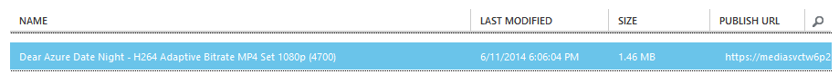

Kaltura Management Console (KMC)
User Manual
Microsoft Azure integration with Kaltura CE 6 (Falcon)
Preface
This manual describes only the specific additions made to the Kaltura Management Console (KMC) through integration with Microsoft Azure. Please refer to Kaltura Management Console (KMC) user manual for a complete listing of related features.
Microsoft Azure Integration Overview
Integration between Kaltura Server and Microsoft Azure makes it possible to move the storage and encoding of media to the Microsoft Azure platform. For instance, a video or audio file that has been uploaded to KMC, can then be transmitted to Microsoft Azure Media Services and encoded. Kaltura player can also pull media content directly from Microsoft Azure, significantly decreasing, the network and operational load on the Kaltura Server.
Wire Microsoft Azure Media Service
You’ll need Microsoft Azure Media Service up and running. Perform the following steps to wire Media Service to Kaltura:
- Open Microsoft Azure Portal and select the target Media Service
- Click “Manage keys” link at the bottom of the page
- Copy Media Service Account Name
- Open KMC on “Settings” tab and “Account settings” section
- Paste Media Service Account Name into “Microsoft Azure Media Service Account Name” field.
- Repeat steps for “Microsoft Azure Media Service Access Key”, use “Primary” or “Secondary” Media Service Access Key
- Press “Save changes” button.
Upload Media
Using the traditional Kaltura server, there are three ways to upload media: upload from the desktop, record from a webcam, or import from the Web.
The latter two methods - recording from a webcam and importing from the Web – the use “flv” format, neither of which is not supported by Microsoft Azure Media Services. These features were removed in this version of Kaltura Server on Microsoft Azure. Instead, per the KMC User Manual, you are advised to upload media from your desktop. Please note, however, that uploaded files will not be stored on the virtual machine hard disk. Rather, the uploaded files will stored within your Microsoft Azure Media Service.
This example below shows a video file upload from the desktop.
- Click “Upload” in top menu and select “Upload from Desktop”
- Select video file
- Click upload button
- Wait the “Ready” status of the entry.
- You will see uploaded file at content list of your Microsoft Azure media service account.
Supported Source Formats
Microsoft Azure will perform the encoding of your media files. All Import Formats listed below are supported. You can find more info at Microsoft Azure documentation.
On the other hand Kaltura Player uses only MP4 (*.mp4) format (H.264 (High and Main Profiles) video codec and AAC audio codec). So output format is limited to only one option.
| File Format | File Extensions |
|---|---|
| 3GPP, 3GPP2 | .3gp, .3g2, .3gp2 |
| Advanced Systems Format (ASF). | asf |
| Advanced Video Coding High Definition (AVCHD) [MPEG-2 Transport Stream] | .mts, .m2ts |
| Audio-Video Interleaved (AVI) | .avi |
| Digital camcorder MPEG-2 (MOD) | .mod |
| Digital video (DV) camera file | .dv |
| DVD transport stream (TS) file | .ts |
| DVD video object (VOB) file | .vob |
| MP4 | .mp4 |
| MPEG-1 System Stream | .mpeg, .mpg |
| MPEG-2 video file | .m2v |
| Smooth Streaming File Format (PIFF 1.3) | .ismv |
| Windows Media Video (WMV) | .wmv |
| File Format | File Extensions |
|---|---|
| MP4 audio | .m4A |
Converting Media Files
Microsoft Azure Media Services also performs the conversion of media files. This is notable, in that it is the opposite from the traditional Kaltura CE process of converting files locally on the VM.
Here is an example of how this process works with Kaltura Server on Azure.
- Open “Edit Entry” window (click on the entry name).
- Go to “Flavors” tab.
- Within the “Action Tab”, select “Convert” or “Reconvert” within the drop down menu.
- The flavor status will change to “Converting”
- Microsoft Azure Media Services will then create a new Conversion Job. You can find it within the Jobs list within the Azure Management Portal.
- It may take a few seconds for the flavor status in KMC to change to “OK”.
- The new file will appear within Microsoft Azure Media Services. You can find it within the “CONTENT” tab page. 

Transcoding Settings
Integration with Microsoft Azure altered some of the transcoding settings that traditional Kaltura Server admins may be used to. A full list of available options is outlined within the chart below. The “Default” column shows that the flavor will be converted automatically after video uploads (Note: you can change these default parameters). This list is posted on “Transcoding Settings” subsection of the KMC “Settings” tab.
| Name | Description | Default |
|---|---|---|
| H264 Adaptive Bitrate MP4 Set 1080p (6000) | HD/1080 - WEB (H264/6000) | - |
| H264 Adaptive Bitrate MP4 Set 1080p (4700) | HD/1080 - WEB (H264/4700) | - |
| H264 Adaptive Bitrate MP4 Set 720p (3400) | HD/720 - WEB (H264/3400) | - |
| H264 Adaptive Bitrate MP4 Set 720p (2250) | SD/Large - WEB/MBL (H264/2250) | - |
| H264 Adaptive Bitrate MP4 Set 720p (1500) | SD/Large - WEB/MBL (H264/1500) | - |
| H264 Adaptive Bitrate MP4 Set 720p (1000) | SD/Large - WEB/MBL (H264/1000) | - |
| H264 Adaptive Bitrate MP4 Set 720p (650) | Basic/Large - WEB/MBL (H264/650) | - |
| H264 Adaptive Bitrate MP4 Set 720p (400) | Basic/Large - WEB/MBL (H264/400) | + |
| H264 Adaptive Bitrate MP4 Set SD 16x9 (1900) | SD/Large - WEB/MBL (H264/1900) | - |
| H264 Adaptive Bitrate MP4 Set SD 16x9 (1300) | SD/Large - WEB/MBL (H264/1300) | - |
| H264 Adaptive Bitrate MP4 Set SD 16x9 (900) | SD/Large - WEB/MBL (H264/900) | - |
| H264 Adaptive Bitrate MP4 Set SD 16x9 (650) | Basic/Large - WEB/MBL (H264/650) | - |
| H264 Adaptive Bitrate MP4 Set SD 16x9 (400) | Basic/Large - WEB/MBL (H264/400) | - |
| H264 Adaptive Bitrate MP4 Set SD 4x3 (1900) | SD/Small-WEB/MBL(H264/1900) | - |
| H264 Adaptive Bitrate MP4 Set SD 4x3 (1300) | SD/Small-WEB/MBL(H264/1300) | - |
| H264 Adaptive Bitrate MP4 Set SD 4x3 (900 | SD/Small-WEB/MBL(H264/900) | - |
| H264 Adaptive Bitrate MP4 Set SD 4x3 (650) | Basic/Small-WEB/MBL(H264/650) | - |
| H264 Adaptive Bitrate MP4 Set SD 4x3 (400) | Basic/Small-WEB/MBL(H264/400) | - |
| H264 Broadband 1080p | HD/1080 - WEB (H264/6750) | - |
| H264 Broadband 720p | HD/720 - WEB (H264/4500) | - |
| H264 Broadband SD 16x9 | SD/Large - WEB/MBL (H264/2200) | - |
| H264 Broadband SD 4x3 | SD/Small-WEB/MBL(H264/1800) | - |
Related Files
File processing for Kaltura Server on Microsoft Azure works in much the same way as Kaltura CE, with one difference: file formats supported by Microsoft Azure Media Services (i. e. file has extension: .3gp, .3g2, .3gp2, .asf, .mts, .m2ts, .avi, .mod, .dv, .ts, .vob, .mp4, .mpeg, .mpg, .m2v, .ismv, .wmv or .m4A) are automatically upload to Microsoft Azure Media Services. Otherwise, the file will be uploaded to the Kaltura Server VM hard drive.
To upload a Related file to Microsoft Azure Media Services:
- Open “Edit Entry” window (click on the entry name).
- Go to “Related files” tab.
- Click “Add more files” button.
- Select a Microsoft Azure Media Services supported file format (*.mp4 for instance).
- Wait for file to finish uploading.
- Now you will be able to locate the uploaded files within the Microsoft Azure Media Services “CONTENT” tab.

Preview and Embed
Microsoft Azure performs direct content delivery. So content traffic will not load your VM. The “Preview and Embed” window was changed to make this possible.
Perform the following steps to open the “Preview and Embed” dialog:
- Click “Select action” on “Content” tab at entry list
- Select “Preview & Embed”
- You will see “Preview and Embed” window
Administration
The process for creating and managing users within Kaltura Server on Azure is the same as in Kaltura CE.
Please note, however, that you and created publishers under the same partner use same Microsoft Azure Credentials. Users can see (or even modify) your Microsoft Azure Credentials, if you give them account settings access permissions.
Unsupported Features
There are some notable differences between KMC on the Microsoft Azure Platform as compared with the original Kaltura KMC, as this new integrated version contains features related to integration with Microsoft Azure Media Services. Also, some features have been suppressed within this version:
-
Uploading and ingestion
- Record form webcam
- Import from web
- Prepare Live Stream Entry
-
Transcoding and processing
- Link to Remote Storage
-
KMC Users and Roles
- Purchasing a License for Additional Users
- Live Streaming
-
Content Authoring Tools
- Clipping and Trimming Media Files
-
Publishing to your Site
- Adaptive Streaming RTMP Delivery with Adaptive Bitrate
- Secure Transport RTMPE
- Akamai HD Network – Allows adaptive bit-rate
- Distribution and Syndication
-
Account Information
- Account Upgrade